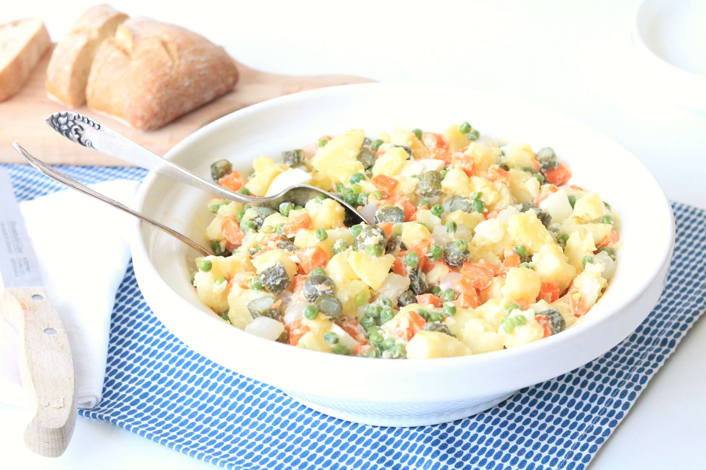

Russische Salade
Deze salade past perfect bij een pittig hoofdgerecht de unieke smaak van rusland proef je meteen en zal elke fijnproever herkennen.
Ingrediënten (4-porties)
- 100 Gram Aardappelen
- 100 Gram Knolselderij
- 50 Gram Wortel
- 100 Gram Augurk
- 50 Gram Doperwten
- 100 Gram Wit Visvlees (Gepocheerd)
- 10 Gram Ui
- ½ dl Dressing
Bereidingswijze
- Schil de aardappelen
- Snijd de aardappelen, knolselderij en wortel in brunoise van 4-5mm.
- Breng voor het blangeren ruim water met wat zout aan de kook en blangeer hierna de aardappelen circa 2-3 minuten net gaar. Giet af en spreid ze meteen uit over een doek, Laat afkoelen tot keukentemperatuur.
- Breng opnieuw water aan de kook met wat zout en en klein scheutje azijn of citroensap. Blangeer hierin achtereenvolgens de knolselderij en wortel in circa 3 minuten beetgaar. Schep de geblangeerde groenten in ijswater en laat deze daarin afkoelen. Giet daarna af en laat goed uitlekken.
- Snijd brunoise van de augurk, pluk de vis en snipper het uitje fijn.
- Voeg alle ingrediënten voor de salade toe in een kom. Voeg zoveel dressing to dat het net aan de salade blijft hangen en meng daarna voorzichtig alles door elkaar.
- Breng het geheel goed op smaak met peper en zout.

Tip U kunt deze salade afgedekt in de koelkast bewaren.